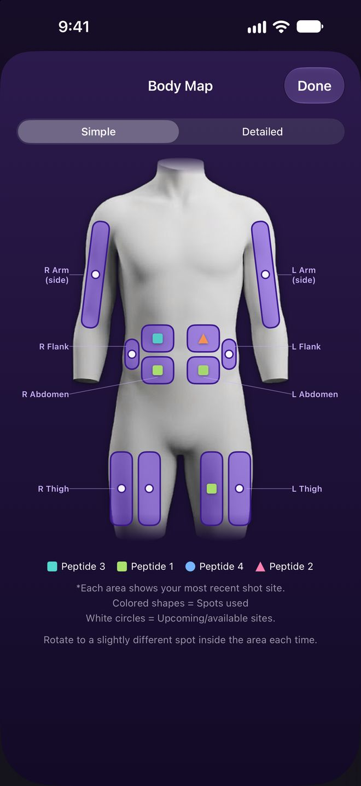

Know where to inject next
Left thigh or right? Was that last week or the week before? Nexdose keeps a body map of every site you've used and shows where you went last, so rotating takes no thought.
Get Nexdose freeFree for iPhone, with an Apple Watch app. No account, no ads, no subscription.

How it works
- Log a shot, and Nexdose records the site with it.
- The body map shows which areas you've used recently.
- Your next shot comes with a suggested site. Want a different one? Tap the body picture on that shot and pick it.
Two levels of detail
- Simple map (free): 12 sites, including the abdomen, thighs and arms.
- Detailed map: 72 sites, for people who want finer control. Plus
Several injections? Each keeps its own history
Every peptide or medicine in Nexdose has its own schedule and its own site history, so you can see where each one went.
Don't need it?
Turn site rotation off in Settings and use Nexdose just for scheduling and reminders.
Nexdose records the sites you choose. It doesn't give medical advice about where or how to inject. Make sure to follow your provider's guidance.